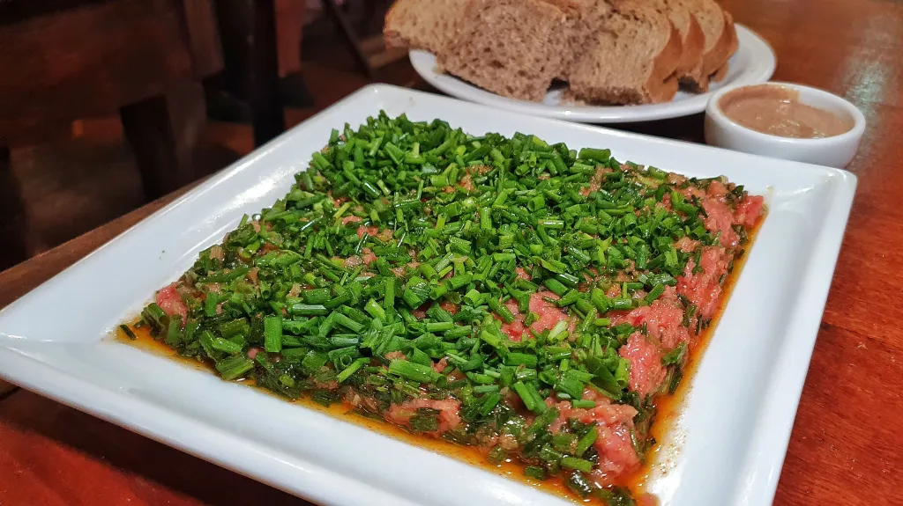

Curiosidades sobre Curitiba
1. O significado de Curitiba
O nome “Curitiba” vem da expressão indígena “kur yt iwa”, que significa “lugar cheio de pinheiros” ou “terra de muitos pinhões”.
2. Curitiba já foi capital do Brasil
Em 1969, Curitiba foi a capital do Brasil por apenas três dias, uma manobra política durante a ditadura militar.
3. O primeiro calçadão do Brasil
A Rua XV de Novembro, um dos lugares mais movimentados da cidade, foi o primeiro calçadão do Brasil
4. A universidade mais antiga
A Universidade Federal do Paraná (UFPR), fundada em 1912, é a mais antiga do Brasil
5. A capital da cerveja artesanal
Embora não tenha o maior número de microcervejarias, Curitiba é reconhecida como a capital da cerveja artesanal no Brasil, abrigando as marcas mais premiadas.
6. Um bairro inteiro italiano
Curitiba abriga um bairro totalmente dedicado à gastronomia italiana, em Santa Felicidade você encontra grandes restaurantes, cantinas e vinícolas.
7. Carne de Onça?
Um prato típico curioso de Curitiba é a 'Carne de Onça', que, apesar do nome, é feito com carne bovina moída crua, temperada e servida sobre um pão sírio. A tradicionalíssima Mercearia Fantinato já recebeu diversos prêmios pelo prato.
8. Personagens das ruas
A cidade abriga emblemáticos como Inri Cristo, Oil Man, Plá, Gilda, Efigênia Rolim, e é também a terra de Dalton Trevisan e Paulo Leminski.
9. Cidade Modelo
Curitiba é conhecida como a “Cidade Modelo” do Brasil, devido a suas iniciativas pioneiras em urbanismo e meio ambiente, incluindo o sistema de transporte público integrado, o BRT (Bus Rapid Transit).
10. Festival de Teatro de Curitiba
Curitiba sedia o maior festival de teatro do Brasil. O Festival de Teatro de Curitiba, realizado anualmente, atrai artistas e espectadores de todo o país.
11. Sustentabilidade
A cidade é um exemplo em sustentabilidade, sendo a primeira do país a implementar um sistema de coleta seletiva de lixo em 1989.
12. O Parque Barigui
É um dos maiores e mais frequentados parques da cidade, onde curitibanos praticam esportes, realizam piqueniques e se encontram para momentos de lazer.

13. Clima
Curitiba possui um clima peculiar, com as quatro estações do ano bem definidas. É famosa pelo ditado “Curitiba não nos poupa, ontem tomei sorvete, hoje tomo sopa”.
14. A Linha Turismo
É uma linha de ônibus especial que circula pelos principais pontos turísticos de Curitiba, oferecendo uma maneira conveniente para visitantes explorarem a cidade.
15. Redução de danos
Curitiba é pioneira na política de redução de danos, com programas voltados para a saúde mental e apoio a populações em situação de vulnerabilidade.
A Torre Panorâmica
É uma torre de telefonia que oferece uma vista de 360 graus da cidade, é o único observatório do Brasil aberto à visitação pública, proporcionando uma perspectiva única da capital paranaense.